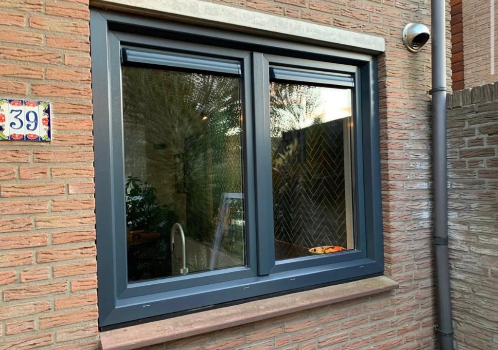

Kort antwoord: check het beleid vóór je tekent
Een aanbouw die bouwkundig klopt, is niet automatisch akkoord op uiterlijk. Waar welstandscriteria gelden, kan de gemeente onder meer kijken naar positie, hoofdvorm, dakrand, kozijnverdeling, kleur en materiaal. Bij een monument, beschermd gezicht of aanbouw die zichtbaar is vanaf openbaar gebied kan de beoordeling uitgebreider zijn.
Er bestaat geen landelijk standaardontwerp dat overal wordt goedgekeurd. Gemeenten leggen hun ruimtelijke regels en beoordelingskaders zelf vast. Zoek daarom je adres op in Regels op de kaart en controleer daarna de website van je gemeente op welstandsbeleid, beeldkwaliteitsplan of omgevingsplan.

Bewaarbare 6-punten welstandscheck
- Zoek de regels op adres. Noteer welk omgevingsplan, beschermingsregime en aanvullend beleid bij jouw perceel horen. Bewaar links of pdf-versies met datum.
- Leg de straatzijde vast. Maak rechte foto’s van je woning, de belendingen en de zichtlijn vanaf openbaar gebied. Zo ziet de ontwerper welke ritmes en materialen terugkomen.
- Teken bestaand én nieuw. Laat gevelaanzichten, plattegrond, hoogte en aansluiting op het hoofdhuis zien. Alleen een losse sfeerafbeelding is niet controleerbaar.
- Specificeer het uiterlijk. Zet type gevel, voeg, kleur, kozijnprofiel, glasverdeling, dakrand en hemelwaterafvoer op de materiaalstaat. “Gelijk aan bestaand” is vaak te vaag.
- Vraag vroeg om reactie. Informeer bij de gemeente of concept- of vooroverleg mogelijk is. Dat is geen vergunning, maar kan een kostbare hertekening na de aanvraag voorkomen.
- Bewaar de uitgangspunten. Verwerk opmerkingen in één definitieve set en wijzig materiaal of kozijnmaat daarna niet stilzwijgend. Een uitvoering die afwijkt kan opnieuw beoordeeld moeten worden.
Welstand is maar één deel van de aanvraag
Een positief oordeel over uiterlijk zegt niets over constructie, isolatie, brandveiligheid of toestemming binnen het omgevingsplan. Andersom vervangt vergunningvrij bouwen niet automatisch alle regels over uiterlijk. Volg daarom ook het officiële stappenplan voor bouwen en verbouwen en doe de adresgebonden vergunningcheck.
Lees daarnaast wanneer een vergunning voor een aanbouw nodig is en de praktische gids over vergunningvrij uitbouwen. Bij twijfel geeft alleen de gemeente duidelijkheid over jouw plan en locatie.
Wat betekent dit voor je prijsindicatie?
Een andere gevelsteen, kozijnverdeling of dakrand kan de bouwscope veranderen. Zet welstandseisen daarom vóór de offerte om in concrete keuzes. Onze calculator geeft een casco-prijsindicatie als bandbreedte voor de geïsoleerde, wind- en waterdichte schil. Vergunning, tekenwerk en interieurafbouw zijn niet standaard inbegrepen; de definitieve offerte volgt na controle op locatie.
Veelgestelde vragen
Wordt iedere aanbouw door een welstandscommissie bekeken?
Nee. De beoordelingsroute en criteria verschillen per gemeente, gebied en plan. Controleer het beleid voor je adres en vraag de gemeente welke procedure geldt.
Moet een aanbouw exact dezelfde stijl hebben als de woning?
Niet per se. Soms past een herkenbaar eigentijds ontwerp, zolang maat, ritme, materiaal en aansluiting overtuigend zijn. De lokale criteria zijn leidend.
Is vooroverleg een definitieve goedkeuring?
Nee. Het helpt om aandachtspunten vroeg te vinden, maar de formele beoordeling volgt op de ingediende stukken. Leg daarom vast welke versie is besproken.
Van ontwerpkeuze naar casco-indicatie
Verzamel eerst de lokale criteria en stel daarna formaat en opties samen. Op locatie toetsen we de bouwkundige scope.